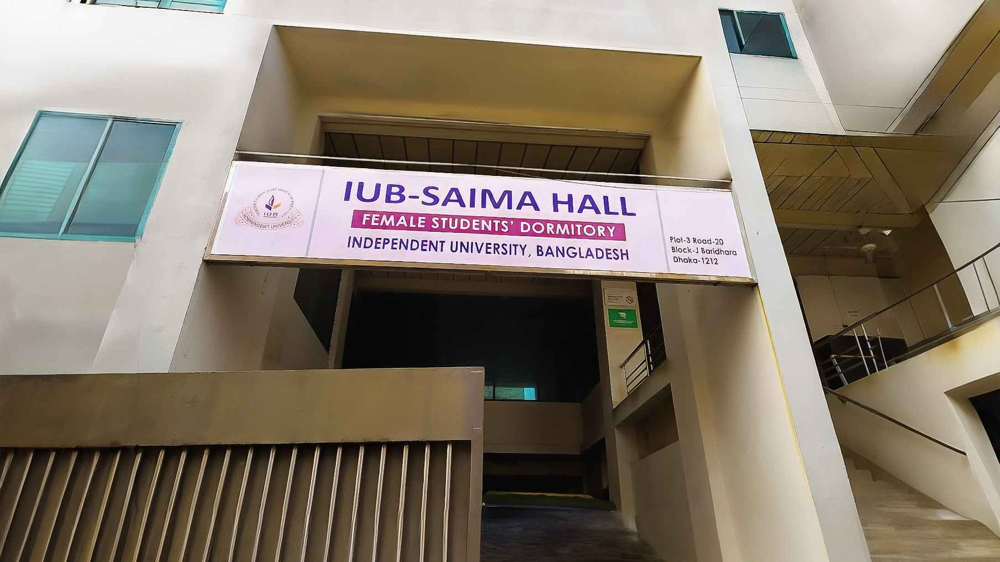

Saima Hall provides secured, need-based accommodation for female students, particularly those from outside Dhaka, offering free lodging and meals. Occupying five floors of a building in Baridhara J Block since 2014, the facility is supported by the Shaheed Abdul Khalek Chowdhury and Major Abdus Salek Chowdhury BU Trust, and houses 50 students and a Dormitory Superintendent.
Contact:
Mohammad Sarwar Hossain
Senior Estate Officer
Email: sarwar@iub.edu.bd
Mobile: 01718559125.
2.
Medical Center
The IUB Medical Center provides emergency first aid to faculty and staff. Staffed by two doctors, a nurse, and a medical assistant, it operates six days a week during class hours.
Contact:
A S M Golam Tareq
Administrative Officer
Email: tareq@iub.edu.bd
Mobile: 01717639601
3.
Psychological Health and Wellness Clinic
The Psychological Health and Wellness Clinic at IUB offers mental health support and counseling to faculty and staff. Two counselors are available for consultations on working days and after hours.
Contact:
A S M Golam Tareq
Administrative Officer
Email: tareq@iub.edu.bd
Mobile: 01717639601